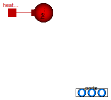

Extends from Modelica.Icons.VariantsPackage (Icon for package containing variants).
| Name | Description |
|---|---|
| Volume of fixed size, closed to the ambient, with inlet/outlet ports | |
| OpenTank | Simple tank with inlet/outlet ports |
| Base classes used in the Vessels package (only of interest to build new component models) |

Ideally mixed volume of constant size with two fluid ports and one medium model.
The flow properties are computed from the upstream quantities, pressures are equal in both nodes and the medium model if use_portsData=false.
Heat transfer through a thermal port is possible, it equals zero if the port remains unconnected.
A spherical shape is assumed for the heat transfer area, with V=4/3*pi*r^3, A=4*pi*r^2.
Ideal heat transfer is assumed per default; the thermal port temperature is equal to the medium temperature.
If use_portsData=true, the port pressures represent the pressures just after the outlet (or just before the inlet) in the attached pipe.
The hydraulic resistances portsData.zeta_in and portsData.zeta_out determine the dissipative pressure drop between volume and port depending on
the direction of mass flow. See VesselPortsData and [Idelchik, Handbook of Hydraulic Resistance, 2004].
Extends from Modelica.Fluid.Vessels.BaseClasses.PartialLumpedVessel (Lumped volume with a vector of fluid ports and replaceable heat transfer model).
| Type | Name | Default | Description |
|---|---|---|---|
| replaceable package Medium | PartialMedium | Medium in the component | |
| Volume | fluidVolume | V | Volume [m3] |
| Volume | V | Volume [m3] | |
| Ports | |||
| Boolean | use_portsData | true | = false to neglect pressure loss and kinetic energy |
| VesselPortsData | portsData[nPorts] | Data of inlet/outlet ports | |
| Assumptions | |||
| Dynamics | |||
| Dynamics | energyDynamics | system.energyDynamics | Formulation of energy balance |
| Dynamics | massDynamics | system.massDynamics | Formulation of mass balance |
| Heat transfer | |||
| Boolean | use_HeatTransfer | false | = true to use the HeatTransfer model |
| replaceable model HeatTransfer | IdealHeatTransfer | Wall heat transfer | |
| Initialization | |||
| AbsolutePressure | p_start | system.p_start | Start value of pressure [Pa] |
| Boolean | use_T_start | true | = true, use T_start, otherwise h_start |
| Temperature | T_start | if use_T_start then system.T... | Start value of temperature [K] |
| SpecificEnthalpy | h_start | if use_T_start then Medium.s... | Start value of specific enthalpy [J/kg] |
| MassFraction | X_start[Medium.nX] | Medium.X_default | Start value of mass fractions m_i/m [kg/kg] |
| ExtraProperty | C_start[Medium.nC] | fill(0, Medium.nC) | Start value of trace substances |
| Advanced | |||
| Port properties | |||
| MassFlowRate | m_flow_small | system.m_flow_small | Regularization range at zero mass flow rate [kg/s] |
| Type | Name | Description |
|---|---|---|
| VesselFluidPorts_b | ports[nPorts] | Fluid inlets and outlets |
| HeatPort_a | heatPort |
model ClosedVolume
"Volume of fixed size, closed to the ambient, with inlet/outlet ports"
import Modelica.Constants.pi;
// Mass and energy balance, ports
extends Modelica.Fluid.Vessels.BaseClasses.PartialLumpedVessel(
final fluidVolume = V,
vesselArea = pi*(3/4*V)^(2/3),
heatTransfer(surfaceAreas={4*pi*(3/4*V/pi)^(2/3)}));
parameter SI.Volume V "Volume";
equation
Wb_flow = 0;
for i in 1:nPorts loop
vessel_ps_static[i] = medium.p;
end for;
end ClosedVolume;
Model of a tank that is open to the ambient at the fixed pressure
p_ambient.
The vector of connectors ports represents fluid ports at configurable heights, relative to the bottom of tank. Fluid can flow either out of or in to each port.
The following assumptions are made:
The port pressures represent the pressures just after the outlet (or just before the inlet) in the attached pipe.
The hydraulic resistances portsData.zeta_in and portsData.zeta_out determine the dissipative pressure drop between tank and port depending on
the direction of mass flow. See VesselPortsData and [Idelchik, Handbook of Hydraulic Resistance, 2004].
With the setting use_portsData=false, the port pressure represents the static head
at the height of the respective port.
The relationship between pressure drop and mass flow rate at the port must then be provided by connected components;
Heights of ports as well as kinetic and potential energy of fluid enering or leaving are not taken into account anymore.
Extends from Modelica.Fluid.Vessels.BaseClasses.PartialLumpedVessel (Lumped volume with a vector of fluid ports and replaceable heat transfer model).
| Type | Name | Default | Description |
|---|---|---|---|
| Height | height | Height of tank [m] | |
| Area | crossArea | Area of tank [m2] | |
| replaceable package Medium | PartialMedium | Medium in the component | |
| Volume | fluidVolume | V | Volume [m3] |
| Ports | |||
| Boolean | use_portsData | true | = false to neglect pressure loss and kinetic energy |
| VesselPortsData | portsData[nPorts] | Data of inlet/outlet ports | |
| Assumptions | |||
| Ambient | |||
| AbsolutePressure | p_ambient | system.p_ambient | Tank surface pressure [Pa] |
| Temperature | T_ambient | system.T_ambient | Tank surface Temperature [K] |
| Dynamics | |||
| Dynamics | energyDynamics | system.energyDynamics | Formulation of energy balance |
| Dynamics | massDynamics | system.massDynamics | Formulation of mass balance |
| Heat transfer | |||
| Boolean | use_HeatTransfer | false | = true to use the HeatTransfer model |
| replaceable model HeatTransfer | IdealHeatTransfer | Wall heat transfer | |
| Initialization | |||
| Height | level_start | 0.5*height | Start value of tank level [m] |
| AbsolutePressure | p_start | p_ambient | Start value of pressure [Pa] |
| Boolean | use_T_start | true | = true, use T_start, otherwise h_start |
| Temperature | T_start | if use_T_start then system.T... | Start value of temperature [K] |
| SpecificEnthalpy | h_start | if use_T_start then Medium.s... | Start value of specific enthalpy [J/kg] |
| MassFraction | X_start[Medium.nX] | Medium.X_default | Start value of mass fractions m_i/m [kg/kg] |
| ExtraProperty | C_start[Medium.nC] | fill(0, Medium.nC) | Start value of trace substances |
| Advanced | |||
| Port properties | |||
| MassFlowRate | m_flow_small | system.m_flow_small | Regularization range at zero mass flow rate [kg/s] |
| Type | Name | Description |
|---|---|---|
| VesselFluidPorts_b | ports[nPorts] | Fluid inlets and outlets |
| HeatPort_a | heatPort |
model OpenTank "Simple tank with inlet/outlet ports"
import Modelica.Constants.pi;
// Tank properties
SI.Height level(stateSelect=StateSelect.prefer, start=max(level_start, Modelica.Constants.eps))
"Level height of tank";
SI.Volume V(stateSelect=StateSelect.never) "Actual tank volume";
// Tank geometry
parameter SI.Height height "Height of tank";
parameter SI.Area crossArea "Area of tank";
// Ambient
parameter Medium.AbsolutePressure p_ambient=system.p_ambient
"Tank surface pressure";
parameter Medium.Temperature T_ambient=system.T_ambient
"Tank surface Temperature";
// Initialization
parameter SI.Height level_start(min=0) = 0.5*height
"Start value of tank level";
// Mass and energy balance, ports
extends Modelica.Fluid.Vessels.BaseClasses.PartialLumpedVessel(
final fluidVolume = V,
final fluidLevel = level,
final fluidLevel_max = height,
final vesselArea = crossArea,
heatTransfer(surfaceAreas={crossArea+2*sqrt(crossArea*pi)*level}),
final initialize_p = false,
final p_start = p_ambient);
equation
// Total quantities
V = crossArea*level "Volume of fluid";
medium.p = p_ambient;
// Source termsEnergy balance
if Medium.singleState or energyDynamics == Types.Dynamics.SteadyState then
Wb_flow = 0
"Mechanical work is neglected, since also neglected in medium model (otherwise unphysical small temperature change, if tank level changes)";
else
Wb_flow = -p_ambient*der(V);
end if;
//Determine port properties
for i in 1:nPorts loop
vessel_ps_static[i] = max(0, level - portsData_height[i])*system.g*medium.d + p_ambient;
end for;
initial equation
if massDynamics == Types.Dynamics.FixedInitial then
level = level_start;
elseif massDynamics == Types.Dynamics.SteadyStateInitial then
der(level) = 0;
end if;
end OpenTank;